A Unified Field Guide
Synthesizing Kellis, Mitchell, ISLR, BERT, and the Genomic Language Model Papers
into One Book for the Living Works by the Word Project
Sage Clokey · Spring 2026
BME 234 — ML & AI in Genomics · UC Santa Cruz
How every algorithm in computational biology applies to growing living architecture
There are two kinds of architecture on this planet. The first is built by humans: steel frames, poured concrete, glass curtain walls. It is impressive, energy-intensive, and dead the moment it is finished. It does not heal when cracked. It does not grow when loaded. It does not breathe.
The second kind of architecture is grown by cells. A tree trunk is a vertical column of cellulose microfibrils wound in helical patterns, reinforced by lignin cross-links, and continuously repaired by living cambium. A coral reef is a calcium carbonate superstructure secreted by billions of polyps, each responding to local flow, light, and mechanical stress. A mycelium network can span hectares underground, redistributing nutrients across an entire forest. These structures were not designed by an engineer. They were grown by organisms following programs written in DNA.
The Living Works by the Word project asks a simple question: can we learn to write those programs?
Not from scratch. Evolution has been writing genomic programs for 4 billion years. The source code is already there — in Ganoderma's chitin cross-linking enzymes, in coral's biomineralization genes, in Arabidopsis's meristem feedback loops, in axolotl's regeneration pathways. The task is not to invent new biology. The task is to become fluent enough in life's existing language to compose new sentences that grow new structures.
This requires machine learning.
Not because ML is fashionable, but because the genome is a 3-billion-letter document written in a language we barely understand. We can read individual words (genes), but we cannot yet read the grammar (regulation), the rhetoric (developmental programs), or the poetry (emergent morphogenesis). Every algorithm in this book — from hidden Markov models to transformers — is a tool for reading a different layer of that language.
This book synthesizes seven sources into a single narrative:
Every chapter teaches the concept as it appears in the source texts, then shows exactly how it applies to the Living Works adaptive genome design system. The application sections are marked with green boxes.
"Biology is the most powerful technology ever created. DNA is software, protein is hardware, and the cell is the operating system." — Adapted from the Kellis lecture notes
All of life runs on a three-step information pipeline that molecular biologists call the central dogma:
DNA is the storage medium — a double-stranded polymer of four nucleotides (adenine A, cytosine C, guanine G, thymine T) arranged in complementary base pairs (A-T, C-G). The human genome contains approximately 3.2 billion of these base pairs, organized into 23 chromosome pairs. But DNA is not unique to humans. Every organism on Earth — from the Ganoderma fungi that could form the walls of a living house to the coral polyps that could harden its foundation — uses the same four-letter alphabet.
Transcription copies a DNA segment into messenger RNA (mRNA) by the enzyme RNA polymerase. The mRNA is a single-stranded working copy — like printing a page from the master blueprint. In eukaryotes (organisms with nuclei, including fungi and plants), the initial transcript contains both coding regions (exons) and non-coding regions (introns). The introns are removed by splicing, and the remaining exons are joined to form the mature mRNA.
Translation converts the mRNA into protein at the ribosome. The mRNA is read in triplets called codons, each specifying one of 20 amino acids (or a stop signal). The resulting amino acid chain folds into a three-dimensional protein that performs actual biological work — catalyzing reactions, forming structures, transmitting signals.
There are 4³ = 64 possible codons but only 20 amino acids plus stop signals. This means the genetic code is redundant — multiple codons encode the same amino acid. For example, leucine is encoded by six different codons: UUA, UUG, CUU, CUC, CUA, CUG. This redundancy is not arbitrary. Different organisms prefer different synonymous codons — a phenomenon called codon usage bias. E. coli strongly prefers certain codons; yeast prefers different ones; Ganoderma has its own dialect.
The compatibility/codon.py module in adaptive_Automation exploits exactly this redundancy. It stores RSCU (Relative Synonymous Codon Usage) tables for five chassis organisms: Komagataeibacter xylinus (bacterial cellulose), yeast, Ganoderma (fungi), Arabidopsis (plant), and sea urchin. When the system retrieves a gene from one organism and inserts it into another, it rewrites the synonymous codons to match the target's dialect — without changing the protein. This is translation in the linguistic sense: same meaning, different words.
The CAI (Codon Adaptation Index) measures how well a sequence speaks the target's dialect, from 0.0 (maximally foreign) to 1.0 (perfectly adapted). Phase 1 will automate this: ESM-3 generates the protein sequence, then back-translation rewrites it into the target organism's preferred DNA codons.
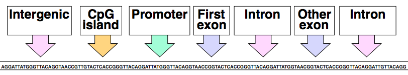
Figure 1.1 — Eukaryotic gene structure (Kellis). A gene consists of exons (coding) separated by introns (non-coding), preceded by a promoter and often a CpG island. The system must identify all of these elements when retrieving genes from source organisms.
A typical eukaryotic gene contains several elements the Living Works system must recognize and handle:
When the system takes a cross-linking enzyme gene from Ganoderma (a fungus) and inserts it into a bacterial cellulose chassis (Komagataeibacter), it must handle the fact that:
compatibility/regulatory.py module flags this cross-kingdom incompatibility.Every structural element described in this section is a potential failure point that the compatibility engine must detect and the assembly engine must resolve.
No two individuals of a species have identical genomes. The differences between them — genetic variants — are the raw material of evolution and the signal that GWAS (Chapter 8) uses to find disease-associated loci. For the Living Works system, understanding variant types matters because every designed sequence creates artificial variants relative to the wild-type source.
The major types of variation (from the Kellis lectures and VCF format specification):
The genome is not just a sequence of letters. It is a decorated sequence — chemically modified in ways that affect which genes are active in which cells. These modifications are collectively called the epigenome:
You can design the perfect gene with the perfect promoter and the perfect codon optimization — and it can still be silent if it lands in closed chromatin. Phase 2 of the roadmap uses Enformer (Chapter 16) to predict chromatin state at the insertion site and expression levels from the designed regulatory sequence. ChromHMM (Chapter 22) provides the training data for these predictions by learning chromatin states from histone modification data.
The data that feeds the Living Works retrieval layer comes in standard bioinformatics formats:
GenomicPart data model normalizes.The retrieval/ucsc_client.py module queries 220+ genomes through the UCSC Genome Browser API, and retrieval/ncbi_client.py handles organisms not in UCSC (mycelium species, coral, spider silk, bacterial cellulose producers). Both normalize results into the unified GenomicPart dataclass.
"The most important insight in all of bioinformatics: if two sequences are similar, they probably share a common ancestor — and therefore similar function." — Kellis Ch2
Before we can retrieve genomic parts from different organisms and combine them, we need to know which parts are equivalent. If we want a cross-linking enzyme from Ganoderma, how do we find the corresponding gene in Pleurotus (another fungus)? If we want to check whether a coral biomineralization gene has been preserved across coral species, how do we measure their similarity?
The answer is sequence alignment — the foundational algorithm of bioinformatics. Given two sequences (DNA or protein), alignment finds the best correspondence between their positions, accounting for mutations (substitutions), insertions, and deletions (indels).
An alignment is scored by summing match rewards, mismatch penalties, and gap penalties across all positions. The key parameters:
Finding the optimal alignment is solved by dynamic programming — the same paradigm that drives HMM decoding (Chapter 4). The three classic algorithms:
Aligns two sequences end-to-end. Fills an (n+1) × (m+1) matrix where entry F(i,j) = best score aligning x[1..i] with y[1..j]. Recurrence:
Time and space: O(nm). Traceback from F(n,m) gives the optimal alignment.
Finds the highest-scoring local region between two sequences. Same recurrence but adds a fourth option: 0 (start fresh). Traceback from the maximum entry anywhere in the matrix.
Exact dynamic programming is O(nm) per pair — too slow for searching entire databases. BLAST (Basic Local Alignment Search Tool) uses a heuristic: find short exact matches (seeds), extend them, and only compute full alignments for promising hits. This is how the NCBI retrieval module searches for homologs of target genes.
The retrieval/species_search.py module maps functions to organisms (e.g., "structural strength" → Ganoderma lucidum). But to find the specific gene encoding a cross-linking enzyme, the system needs sequence alignment:
Alignment also determines protein domain conservation: if two proteins share >30% sequence identity across their catalytic domains, they likely share the same enzymatic function. Below 20%, the relationship is uncertain ("twilight zone"). This threshold guides the compatibility engine's confidence scoring.
Aligning more than two sequences simultaneously reveals evolutionary conservation patterns. Positions that are invariant across many species are functionally critical — mutating them will likely break the protein. Positions that vary freely are tolerant to change — safe targets for codon optimization or functional modification.
MSA is also a critical input to AlphaFold (Chapter 20). The Evoformer processes MSA rows to capture co-evolutionary signals: if position i and position j always change together across species, they are likely in physical contact in the 3D structure. This is how AlphaFold predicts structure from sequence.
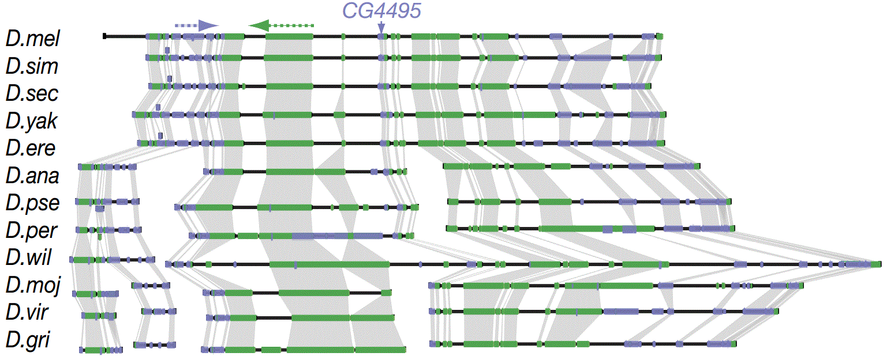
Figure 2.1 — Sequence conservation across species (Kellis). Conserved regions (high bars) indicate functional constraint — these positions cannot tolerate mutation. The Living Works system must identify and protect these positions during codon optimization.
Alignment scores can be interpreted probabilistically. A match score s(a,b) corresponds to a log-odds ratio:
This is the same log-odds framework used in Markov chain classification (Chapter 3) and GWAS (Chapter 8). Positive scores mean the pair (a,b) is more likely under the hypothesis of shared ancestry than under random chance. The total alignment score is the sum of log-odds ratios — a likelihood ratio test for evolutionary relatedness.
Kellis (Ch3) notes that this probabilistic view connects alignment directly to HMMs: an alignment can be modeled as a pair-HMM with match, insert-x, and insert-y states. The Viterbi algorithm on this pair-HMM gives the optimal alignment, and the Forward algorithm gives the total probability of all alignments. The algorithms are mathematically identical — only the state space differs.
"A Markov chain is a stochastic process that remembers only where it is, not where it has been." — Kellis Ch7
A Markov chain is a sequence of random variables x₁, x₂, ..., x_L where the probability of each variable depends only on the immediately preceding one:
This is the Markov assumption — the future depends only on the present, not the past. The key parameters are the transition probabilities:
These form a transition matrix A where each row sums to 1 (from each state, you must go somewhere). The probability of an entire sequence is:
This is the simplest possible model of sequence structure. It says: the probability of seeing nucleotide G at position 100 depends only on what nucleotide is at position 99 — not on the entire preceding sequence.
The classic application of Markov chains in genomics is CpG island detection. CpG dinucleotides (cytosine followed by guanine) are underrepresented in most of the genome because methylated cytosines spontaneously deaminate to thymine. But in CpG islands — regions near gene promoters — CpGs are maintained at expected frequency because these regions are typically unmethylated.
Two Markov models capture this difference:
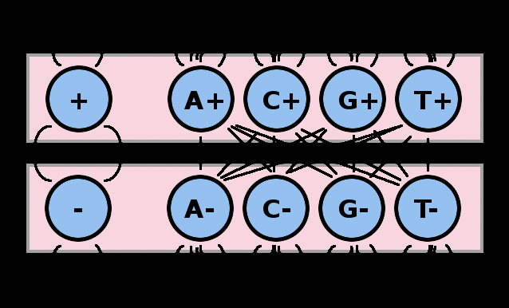
Figure 3.1 — CpG island detection model (Kellis). Two sets of states (+ and −) with different transition probabilities for CpG dinucleotides. This is the simplest HMM for genomic annotation — and a direct precursor to gene-finding HMMs.
To classify a sequence as CpG island or not, compute the log odds ratio:
If S(X) > 0, the sequence is more likely a CpG island. This is the same log-odds ratio used in HW1 Problem 2 for promoter classification and in the compatibility/codon.py module for codon dialect scoring.
A first-order Markov chain conditions each base on only the previous base. A k-th order Markov chain conditions on the previous k bases — the state is a k-mer (substring of length k). The number of states grows as 4ᵏ.
From HW1 Problem 2, we built k-mer Markov models to classify DNA sequences as promoter or non-promoter:
The sharp jump from k=1 to k=2 reveals a fundamental biological truth: most discriminative signal in DNA lies in dinucleotide dependencies. The relationship between adjacent bases — the CpG frequency, the AA content, the dinucleotide step geometry — carries more information than single-base composition alone.
At k=20, there are 4²⁰ ≈ 10¹² possible states. With only a few thousand training sequences, most k-mers will never be observed. The transition probabilities become unreliable (estimated from one or zero counts), and the model memorizes the training data without learning generalizable patterns. This is the bias-variance tradeoff (Chapter 6) in its simplest form: more complex models fit training data better but generalize worse.
The RSCU tables in compatibility/codon.py are exactly the parameters of a biological Markov model. Each organism's preferred codons define a probability distribution over synonymous triplets — a transition matrix from amino acid to DNA triplet. The CAI score is a log-odds ratio comparing how well a sequence fits the target organism's model versus a uniform model.
Extending to k=2 (hexamers spanning codon boundaries) would capture codon pair bias — the tendency of certain adjacent codons to appear together. Research shows that codon pair deoptimization can attenuate viruses while maintaining the same protein. The Living Works system could exploit codon pair bias to fine-tune expression levels: strong codon pairs for high expression, weak pairs for low expression.
Estimating transition probabilities is straightforward — count transitions and normalize (maximum likelihood estimation):
But what if some transitions are never observed in the training data? The MLE gives zero probability, which means any sequence containing that transition gets probability zero — clearly wrong. The solution is pseudocounts (Laplace smoothing): add a small count (e.g., 1) to every cell before normalizing:
Pseudocounts reflect a weak prior belief that all transitions are possible. This is a Bayesian concept (Chapter 13) applied in the simplest possible way.
An important theoretical result (HW1 Problem 1e): the sum over all possible sequences of length L equals 1. The proof works by evaluating sums from inside out:
This telescoping proof depends on the conditional distributions summing to 1 at each step — a property guaranteed by the transition matrix normalization. The same proof structure appears in the Forward algorithm for HMMs (Chapter 4), where it ensures that the total probability P(X) computed by summing over all possible hidden state sequences is correct.
"An HMM is a Markov chain you can't see, producing observations you can." — Kellis Ch7
A Markov chain models sequences where we directly observe the states. But in many biological problems, the states are hidden — we observe only their effects. We see the DNA sequence (observations), but we don't see whether each position is exon, intron, or intergenic (hidden states). We see the histone modification pattern, but we don't see the chromatin state (promoter, enhancer, repressed).
A Hidden Markov Model adds an observation layer on top of a Markov chain:
The joint probability of a sequence of observations X and a path of hidden states π is:
An HMM with m hidden states and k possible observations requires:
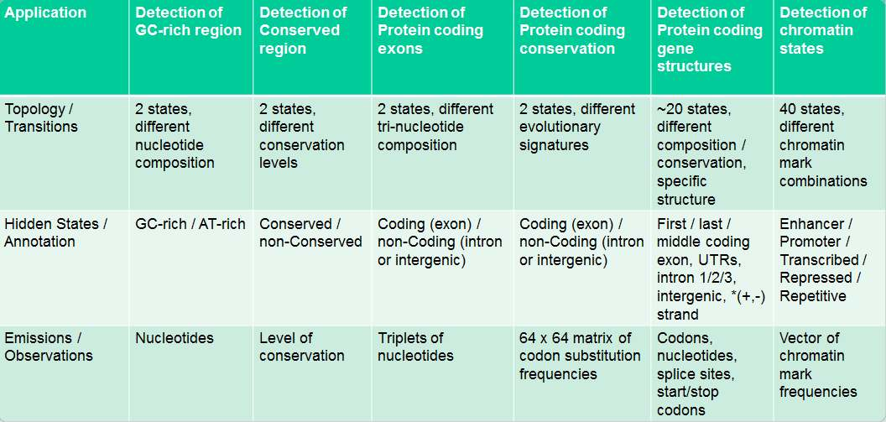
Figure 4.1 — HMM applications in computational biology (Kellis). Each application has different states, observations, and topology. From detecting GC-rich regions (2 states) to finding gene structures (~20 states) to learning chromatin states (40 states). Every one of these applications has a direct analog in the Living Works system.
Given an HMM, there are three fundamental computational problems (Kellis Ch7):
The Viterbi algorithm finds the single most probable sequence of hidden states given the observed sequence. It uses dynamic programming, filling a matrix where vₖ(i) = probability of the most probable path ending in state k at position i:
The key operation is max — at each position, we pick the single best predecessor state. By storing backpointers, we can trace back from the final state to recover the full optimal path.
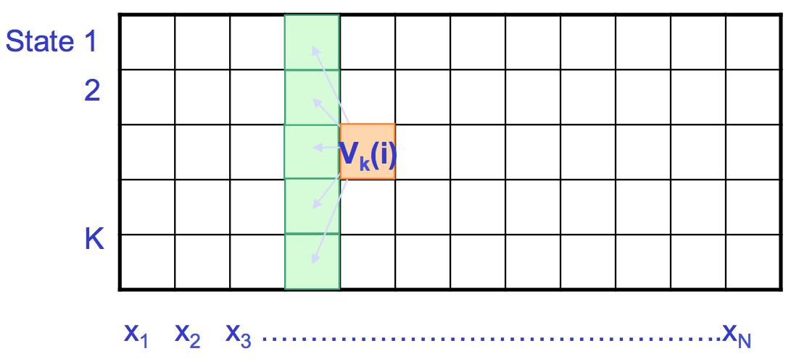
Figure 4.2 — Viterbi algorithm trellis (Kellis). Each column represents a position in the sequence, each row a hidden state. The highlighted cell V_k(i) takes the MAX over all incoming arrows from the previous column — selecting the single best predecessor.
Complexity: O(m² · L) time and O(m · L) space, where m = number of states and L = sequence length.
The Forward algorithm computes the total probability of the observed sequence, summing over all possible hidden state paths. The forward variable fₖ(i) = P(x₁...xᵢ, πᵢ = k):
The only difference from Viterbi is sum instead of max. This subtle change has profound implications: Viterbi finds the single best explanation; Forward integrates over all possible explanations.
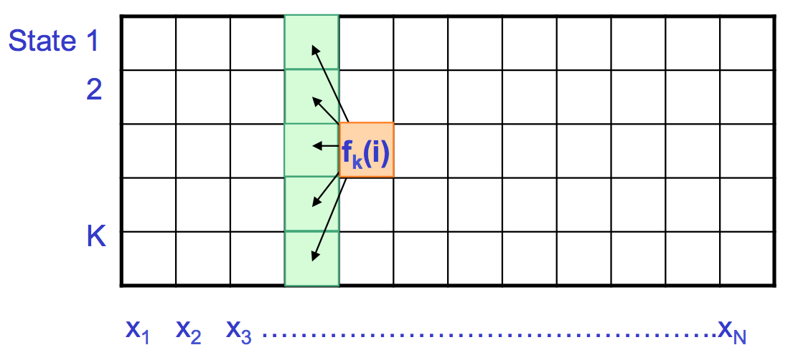
Figure 4.3 — Forward algorithm trellis (Kellis). Same structure as Viterbi, but f_k(i) takes the SUM over all incoming arrows — integrating over all possible paths, not just the best one.
The total probability of the observed sequence is:
The Backward algorithm computes bₖ(i) = P(xᵢ₊₁...x_L | πᵢ = k) — the probability of future observations given the current state:
Initialization: bₖ(L) = 1 for all k (after the last position, there are no more observations to explain).
Combining Forward and Backward gives the posterior probability of being in state k at position i:
Posterior decoding picks the most likely state at each position independently. This is different from Viterbi in a subtle but important way:
The retrieval layer pulls raw genomic sequence from UCSC/NCBI. Before the assembly engine can work with it, the sequence must be annotated: where are the exons? Where are the regulatory elements? What chromatin state is each region in?
HMMs provide this annotation:
If we know the true hidden states (labeled training data), estimating HMM parameters is straightforward — count and normalize, just like training a Markov chain:
Add pseudocounts to avoid zeros. This is maximum likelihood estimation with a Dirichlet prior (Chapter 13).
In practice, we often don't know the true hidden states. We have the DNA sequence but not the exon/intron labels. Two approaches:
Viterbi training is a "hard" EM algorithm — it commits to a single best path at each iteration. It converges quickly but can get stuck in poor local optima.
Baum-Welch is the "soft" EM algorithm for HMMs. Instead of committing to a single path, it uses expected counts from forward-backward probabilities:
E-step: Compute expected number of transitions and emissions using posterior probabilities:
M-step: Update parameters using expected counts (same formulas as supervised, but with expected counts instead of actual counts).
Repeat E and M steps until the likelihood P(X | θ) converges. Baum-Welch is guaranteed to increase the likelihood at each step (or leave it unchanged at a fixed point), but like all EM algorithms, it finds only a local maximum — the result depends on initialization.
The system retrieves genes from organisms whose genomes may be poorly annotated (e.g., Ganoderma, coral). Baum-Welch can learn gene structure parameters directly from unannotated sequence:
This is transfer learning at the HMM level — the same principle that makes fine-tuning work for transformers (Chapter 17), applied to the simplest sequence model.
The most important genomic application of HMMs is gene finding — identifying protein-coding genes in raw DNA sequence. GENSCAN (Burge & Karlin, 1997) is the classic example.
GENSCAN uses a complex HMM with states for:
The model has ~20 states and accounts for both forward and reverse strand genes. Observations at each position include not just the nucleotide but also contextual features like coding potential scores.
Standard HMMs have a geometric state duration distribution (the probability of staying in a state for exactly d steps is p_self^(d-1) · (1-p_self)). This is biologically unrealistic — exons have a characteristic length distribution that is not geometric.
Generalized HMMs (also called hidden semi-Markov models) allow each state to have an explicit duration distribution. GENSCAN uses this for exons: it models the distribution of exon lengths from known genes, rather than relying on self-transition probabilities.
ChromHMM (Ernst & Kellis, 2010) applies HMMs to a different problem: learning chromatin states from histone modification data.
A typical ChromHMM model uses 15-40 states. Each state has a characteristic combination of histone marks that corresponds to a known functional element. The model is unsupervised — it discovers the states without being told what they are.
Phase 2 of the roadmap integrates Enformer for expression prediction. But Enformer needs training data — labeled regulatory elements (promoters, enhancers, silencers) in the target organism. ChromHMM provides this labeling:
Even without wet-lab data, ChromHMM annotations from related organisms can be transferred as a starting point — analogous to Baum-Welch initialization from a related species.
"Statistical learning refers to a vast set of tools for understanding data." — ISLR Ch2
ISLR Chapter 2 establishes the fundamental framework that underlies every prediction task in this book. We observe an output variable Y (the thing we want to predict) and p input variables X = (X₁, X₂, ..., Xₚ) (the features we use to predict it). We assume there exists some function f such that:
where ε is an irreducible error term (noise we can never eliminate). The goal of statistical learning is to estimate f — to find f̂ that approximates the true f as closely as possible.
Two purposes for estimating f:
The expected prediction error for a regression model can be decomposed as:
The tradeoff: as model complexity increases, bias decreases but variance increases. The optimal model minimizes total error — somewhere between too simple and too complex.
This is exactly what we saw with k-mer Markov models in Chapter 3: k=1 is too simple (high bias, underfitting), k=20 is too complex (high variance, overfitting), and k=2-3 is the sweet spot.
Training error (error on the data used to fit the model) always decreases as complexity increases — a sufficiently flexible model can memorize the training data. But test error (error on new, unseen data) follows a U-shape: it decreases initially as the model captures real patterns, then increases as the model starts fitting noise.
This is the most important concept in all of machine learning for the Living Works project: a model that perfectly fits known genomic data is not necessarily a model that will correctly predict the behavior of designed sequences. Validation on held-out data is essential.
ISLR describes several methods for estimating test error:
When Phase 1 generates candidate proteins via ESM-3 and scores them with AlphaFold's pLDDT, how confident should we be? The system must validate predictions:
The bias-variance tradeoff applies directly: a design model that perfectly predicts known enzyme activities (training performance) may fail on novel designs (test performance). Early iterations of the system should prioritize conservative designs close to known functional sequences.
ISLR distinguishes two approaches:
For genomics, the choice depends on the problem. GWAS (Chapter 8) uses parametric logistic regression because interpretability matters — we want to know the effect size of each variant. Variant effect prediction (Chapter 12) can use non-parametric random forests because prediction accuracy matters more than interpretability.
Linear regression models the relationship between a quantitative response Y and predictors X₁, ..., Xₚ as:
The coefficients β are estimated by minimizing the residual sum of squares (RSS):
The ordinary least squares (OLS) solution has a closed-form expression: β̂ = (X'X)⁻¹X'Y. Key properties:
For binary outcomes (case/control, pathogenic/benign), linear regression is inappropriate because it can predict values outside [0,1]. Logistic regression models the probability of the positive class using the logistic (sigmoid) function:
Equivalently, in terms of log-odds (logit):
The log-odds is linear in the predictors. β₁ = the change in log-odds per unit increase in X₁. The odds ratio e^{β₁} is the multiplicative change in odds per unit increase.
Parameters are estimated by maximum likelihood — find the β that maximize the probability of the observed data:
This is the cross-entropy loss — the same loss function used to train neural networks for classification (Chapter 14).
In GWAS, the response Y is case/control status and the primary predictor is genotype dosage (0, 1, or 2 alternate alleles). But we also include covariates — variables that might confound the association:
Principal components (PCs) of the genotype matrix capture population structure (ancestry). Including PCs as covariates prevents false associations due to population stratification — the correlation between ancestry and both genotype and disease status.
Every codon change in the assembly output is a designed variant. Logistic regression provides a framework for predicting whether each change will disrupt function:
This is simpler than deep learning approaches but interpretable and trainable on small datasets — exactly what the early stages of the Living Works system need, before enough wet-lab validation data accumulates for neural network training.
"GWAS asks the simplest possible question across the entire genome: is this variant more common in cases than controls?" — BME 234 Lecture 5
A genome-wide association study (GWAS) compares allele frequencies between disease cases and healthy controls across millions of genetic variants. The logic is straightforward:
GWAS data is organized as an n × p matrix where n = individuals and p = SNPs. Each entry is the dosage: 0, 1, or 2 copies of the alternate allele. This matrix can have millions of columns — far more features than samples, a high-dimensional challenge that recurs throughout machine learning.
For each SNP, the logistic regression coefficient β̂₁ represents the per-allele effect on log-odds of disease. The odds ratio OR = e^{β̂₁} is the multiplicative change in odds per alternate allele:
Most GWAS hits have small effect sizes (OR = 1.05 - 1.3). Large-effect variants are rare because natural selection removes highly deleterious alleles from the population — this is the evolutionary logic that CADD (Chapter 12) exploits for variant effect prediction.
GWAS identifies associated loci, not necessarily causal variants or genes. The causal variant might be in LD with the tag SNP (Chapter 9). Most GWAS hits are in non-coding regions, likely affecting gene regulation rather than protein sequence.
Post-GWAS analysis bridges the gap:
GWAS goes from genotype to phenotype: which variants affect which traits? The Living Works system reverses this: which designed changes will produce the desired phenotype?
The eQTL framework is directly applicable. When Phase 2 designs regulatory sequences, each designed variant has a predicted effect on expression — an "eQTL effect" computed by Enformer rather than by association testing. The system can rank regulatory designs by their predicted expression-changing power, just as GWAS ranks variants by p-value.
Polygenic risk scores have an analog too: a "polygenic design score" could sum the predicted effects of all designed changes in a construct, estimating the total impact on the desired phenotype.
Testing 1 million SNPs at α = 0.05 produces ~50,000 false positives (5% of 1M). The challenge is distinguishing true associations from the enormous haystack of false positives.
For GWAS: 0.05 / 10⁶ ≈ 5 × 10⁻⁸. This controls the family-wise error rate (FWER) — the probability of even one false positive. It's conservative: if the tests are correlated (which they are, due to LD), Bonferroni is overly strict.
Less conservative than Bonferroni. Controls the false discovery rate — the expected proportion of discoveries that are false:
The q-value of a test is the minimum FDR at which it would be called significant. A q-value of 0.05 means that among all tests at least as significant, 5% are expected to be false discoveries. q-values additionally estimate π₀ (the proportion of true nulls) for improved power.
Nearby variants on the same chromosome are correlated because they are co-inherited on haplotypes. This non-random association is called linkage disequilibrium. Measured by r² (squared Pearson correlation between two variant dosages):
LD has two important consequences for GWAS:
The LD score of a SNP is the sum of its r² values with all other SNPs. SNPs with high LD scores tag more of the genome — they're in high-LD regions where many variants are correlated.
Manhattan plot: -log₁₀(p-value) on the y-axis versus genomic position on the x-axis. Significant loci appear as peaks rising above the genome-wide significance line (p = 5 × 10⁻⁸). Each chromosome is a different color.
Q-Q plot: Observed -log₁₀(p) versus expected -log₁₀(p) under the null hypothesis. Most points should follow the diagonal (most SNPs have no effect). Systematic deviation above the diagonal suggests either true signal or population stratification (confounding by ancestry).
The assembly engine tests compatibility at thousands of positions in a designed sequence. Each position is a test: is this codon compatible with the target organism? Is this regulatory element functional in this context? Without multiple testing correction, the system would flag too many false incompatibilities (or miss real ones).
BH-FDR control at 5% ensures that no more than 5% of flagged incompatibilities are false alarms — a manageable rate for manual review. Bonferroni would be too conservative, flagging only the most extreme incompatibilities and missing subtle problems that accumulate.
"Decision tree learning is one of the most widely used and practical methods for inductive inference." — Mitchell Ch3
A decision tree classifies instances by sorting them through a tree of binary decisions. At each internal node, the tree tests one feature. At each leaf, the tree outputs a class prediction. The tree is learned by recursively splitting the training data on the feature that provides the most information.
Mitchell (Ch3) uses a motivating example: predicting whether to play tennis based on Outlook, Temperature, Humidity, and Wind. The learned tree first splits on Outlook (Sunny/Overcast/Rain), then subdivides further. Each path from root to leaf represents a conjunction of feature constraints.
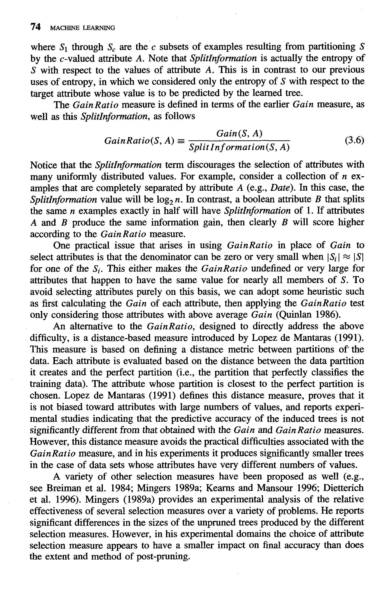
Figure 10.1 — The GainRatio measure (Mitchell). An improvement over Information Gain that normalizes by SplitInformation, preventing bias toward attributes with many values.
The key question at each node: which feature should we split on? The ID3 algorithm (Quinlan, 1986) uses information gain — the reduction in entropy achieved by splitting on attribute A:
where H(S) is the entropy of set S:
Entropy measures impurity — uncertainty about the class label in a set. H = 0 when all examples belong to one class (pure). H = 1 when examples are evenly split between two classes (maximum uncertainty). Information gain selects the attribute that reduces uncertainty the most.
CART (Classification and Regression Trees) uses the Gini index instead of entropy:
G = 0 when pure; maximum when classes are equally represented. Gini is the default in scikit-learn. In practice, Gini and entropy produce similar trees.
Mitchell describes ID3 step by step:
ID3 has a strong inductive bias: it prefers shorter trees (Occam's Razor). This is because information gain tends to select the most discriminative attribute first, building compact trees. Mitchell devotes significant discussion to how inductive bias affects generalization — the same theme that runs through ISLR's bias-variance tradeoff.
A tree grown to maximum depth will perfectly classify the training data — every leaf contains examples from a single class. But this tree overfits: it memorizes noise in the training data and generalizes poorly.
Mitchell defines overfitting precisely: hypothesis h overfits the training data if there exists an alternative hypothesis h' such that h has smaller error than h' on training data but h' has smaller error on the full distribution. The tree is too specific to the training set.
Solutions:
The retrieval/species_search.py module maps biological functions to source organisms. This mapping can be modeled as a decision tree:
Currently this mapping is hard-coded from domain knowledge (8 biological capability categories). As the system accumulates data from designs that worked vs failed, a decision tree could be learned from experience — automatically discovering which organism-function combinations succeed.
The basic ID3 algorithm handles discrete attributes. For continuous attributes (common in genomics — conservation scores, expression levels, allele frequencies), the tree must find the best threshold:
This makes the split binary: attribute ≤ threshold vs attribute > threshold. All continuous features in the Living Works compatibility engine (CAI score, GC content, regulatory score, pathway impact) would be handled this way.
"The key idea is to combine many weak learners to form a single strong learner." — ISLR Ch8
Decision trees have low bias (they can fit complex patterns) but high variance (small changes in training data produce very different trees). ISLR calls them "unstable." Ensemble methods reduce variance by combining many trees.
Breiman's bagging (1996) is beautifully simple:
Why it works: averaging reduces variance. If each tree has variance σ², the average of B uncorrelated trees has variance σ²/B. The key assumption is that trees are uncorrelated — which they're usually not, because all trees see the same features and tend to split on the same dominant predictor.
Each bootstrap sample includes ~2/3 of observations (the rest are left out by chance). These left-out observations form an automatic validation set — the out-of-bag sample. OOB error provides a free estimate of test error without requiring a separate validation set.
Random forests improve on bagging by decorrelating the trees. At each split, instead of considering all p features, randomly select a subset of m features (typically m ≈ √p for classification, m ≈ p/3 for regression). This forces different trees to use different features at the top splits, reducing correlation between trees.
The result: lower variance than bagging, with similar bias. Random forests are among the most successful out-of-the-box classifiers in machine learning.
Random forests provide a natural measure of feature importance: for each feature, permute its values in the OOB samples and measure the increase in prediction error. Features that cause large error increases when shuffled are important; features that cause no change are irrelevant.
CADD integrates 60+ annotations into a single variant effect score using a linear SVM. The Living Works system needs an analogous "designability score" — a single number predicting whether a designed construct will function. A random forest is ideal for this:
The random forest can be trained on small datasets (even 50-100 validated designs) and improves as more data accumulates. Feature importance adapts — early experiments might show codon usage is critical, but later data might reveal regulatory context dominates.
While bagging reduces variance by averaging, boosting reduces bias by iteratively focusing on hard-to-classify examples:
AdaBoost (Freund & Schapire, 1996) was the first practical boosting algorithm. Gradient boosting (Friedman, 2001) generalizes by fitting each new tree to the residual errors of the current model.
ISLR notes that boosting has three tuning parameters: B (number of trees), λ (learning rate / shrinkage), and d (interaction depth / tree depth). Typical values: B = 100-10000, λ = 0.01-0.1, d = 1-6. Cross-validation selects the best combination.
XGBoost (Chen & Guestrin, 2016) is the dominant implementation, used in many winning Kaggle solutions and in bioinformatics tools like REVEL (variant effect meta-predictor).
"Find the hyperplane that gives the largest minimum distance to the training examples." — ISLR Ch9
Given two linearly separable classes, infinitely many hyperplanes can separate them. The maximal margin classifier chooses the one that maximizes the distance (margin) to the nearest training points. The points closest to the boundary are called support vectors — they alone define the decision boundary.
The margin is 2/||w|| where w is the normal vector to the hyperplane. Maximizing the margin is equivalent to minimizing ||w||² subject to the constraint that all training points are correctly classified:
Perfect separation is often impossible (or undesirable — it overfits). The support vector classifier allows some violations of the margin using slack variables ξᵢ:
The parameter C controls the tolerance for violations:
C is the SVM's regularization parameter — directly analogous to the bias-variance knob in every model.
Linear boundaries are often inadequate. The kernel trick maps data to a higher-dimensional space where linear separation becomes possible — without ever explicitly computing the coordinates in that space.
The SVM optimization depends on data only through inner products x·x'. The kernel function K(x,x') computes this inner product in the transformed space:
The RBF kernel measures Gaussian similarity between points. γ controls the reach: large γ makes each point influential only in a tiny neighborhood (tight fit, risk of overfitting), small γ makes each point influential far away (smooth boundary, risk of underfitting).
Kellis (Ch16) describes SVMs for tumor classification from gene expression data. Each sample has ~20,000 gene expression features, but only ~100 samples. SVMs handle this high-dimensional setting well because they depend only on support vectors, not on the dimensionality of the feature space.
CADD (Combined Annotation Dependent Depletion) uses a linear SVM to integrate 60+ genomic annotations into a single deleteriousness score. The training data comes from an elegant evolutionary argument: variants that have been removed by natural selection (not observed in the human population) are likely deleterious; variants that survived selection (observed in population databases) are likely benign. By training on "simulated" (random) versus "evolved" (observed) variants, CADD learns to distinguish deleterious from benign without any clinical labels.
When ESM-3 generates candidate proteins in Phase 1, we need to verify that each candidate has the desired function. An SVM with an RBF kernel on ESM-2 embeddings (768-dimensional vectors) can classify candidates as functional/non-functional:
"Bayesian learning provides a principled approach to incorporating prior knowledge." — Mitchell Ch6
Mitchell devotes an entire chapter to Bayesian methods because they provide the theoretical foundation for many ML algorithms. Bayes' theorem:
Maximum A Posteriori (MAP): Choose h that maximizes P(h|D) ∝ P(D|h) · P(h). Incorporates prior beliefs.
Maximum Likelihood (ML): Choose h that maximizes P(D|h). Ignores prior beliefs (or assumes uniform prior). Equivalent to MAP when all hypotheses are equally likely a priori.
Pseudocounts in HMMs (Chapter 5) are a Bayesian prior — they encode the belief that all transitions are possible, even if unobserved. The strength of the prior (how many pseudocounts) balances prior belief against observed data.
The Naive Bayes classifier assumes all features are conditionally independent given the class label:
This "naive" independence assumption is almost never true in practice — gene expression features are highly correlated, for example. Yet Naive Bayes often works surprisingly well, especially with many features and limited training data. Mitchell explains this paradox: the classifier only needs to get the ranking of class probabilities correct, not their absolute values. Even with wrong probability estimates, the correct class often has the highest estimated probability.
Mitchell and Kellis both cover EM as the general framework for learning with missing data. Baum-Welch (Chapter 5) is EM applied to HMMs. The general algorithm:
EM is guaranteed to increase the likelihood at each step (or leave it unchanged), but it finds only a local maximum. Multiple random restarts help find better solutions.
Bayesian thinking is embedded in every layer of the Living Works system:
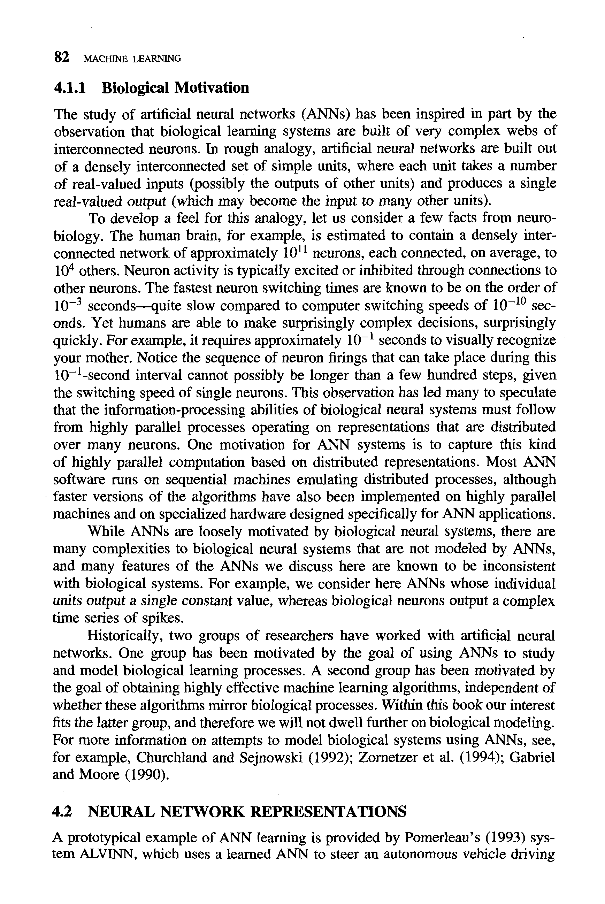
Figure 14.1 — Biological motivation for artificial neural networks (Mitchell Ch4). The brain uses ~10¹¹ neurons, each connected to ~10⁴ others. Neural networks are loosely inspired by this distributed, parallel architecture — the same architecture that cells use to process signals in living organisms.
Mitchell (Ch4) begins with biological motivation: the brain contains ~10¹¹ neurons, each connected to ~10⁴ others. Neuron switching time is ~10⁻³ seconds — far slower than computers at 10⁻¹⁰ seconds. Yet humans recognize faces in ~10⁻¹ seconds, which allows only ~100 sequential steps. This implies the brain uses massively parallel distributed processing.
Artificial neural networks (ANNs) capture this idea: many simple units operating in parallel, with learned connections. But Mitchell is careful to note that ANNs are not faithful models of biological neurons — they output continuous values rather than spike trains, use backpropagation rather than biological learning rules, and lack temporal dynamics.
The simplest neural network: a single neuron with input weights w₁, ..., wₙ, bias b, and a step activation function:
The perceptron can learn any linearly separable function (AND, OR, NOT) but cannot learn XOR. This limitation motivated multi-layer networks.
A multi-layer network stacks neurons in layers: input → hidden → output. With nonlinear activation functions (sigmoid, tanh, ReLU), a network with one hidden layer can approximate any continuous function (universal approximation theorem).
Training uses backpropagation — the chain rule applied layer by layer to compute gradients of the loss with respect to all weights:
Neural networks with many parameters easily overfit. Regularization techniques:
Neural networks appear at every phase of the roadmap:
Understanding backpropagation, activation functions, and regularization is not optional — it's the foundation for understanding every model in the pipeline. When a design candidate gets a low ESM-3 confidence score, you need to understand what the network is uncertain about. When Enformer predicts low expression, you need to understand whether the prediction is reliable (or whether the model is extrapolating outside its training distribution).
"A CNN learns motifs from sequence the way your eye learns edges from pixels." — BME 234 Lecture
DNA sequence has a property that makes it ideal for convolutional neural networks: local patterns matter. Transcription factor binding motifs are 6-20bp long. Splice site signals span ~10bp. Promoter elements are ~30bp. These are local features — analogous to edges and textures in images — and convolution is designed to detect local features regardless of position.
DNA sequence is encoded as a 4 × L binary matrix, where L is the sequence length. Each position is a column with a single 1 indicating the nucleotide:
This creates a "1D image" with 4 channels — just like an RGB image has 3 channels. The first convolutional layer slides filters of size 4 × k across this input, where k is the filter width (motif length).
A typical genomic CNN follows this pipeline:
A remarkable property of genomic CNNs: the weights of first-layer filters can be visualized as position weight matrices (PWMs) — the same format used to represent transcription factor binding motifs. Trained filters often match known TF binding sites from databases like JASPAR and TRANSFAC.
This means CNNs rediscover biology: they learn, from raw sequence and labels alone, the same regulatory motifs that decades of wet-lab experiments identified. Deeper layers learn combinations of motifs — the spacing, orientation, and co-occurrence patterns that constitute regulatory grammar.
DeepSEA (Zhou & Troyanskaya, 2015) was one of the first successful deep learning models for genomics:
DeepSEA's killer application: predicting variant effects without wet-lab experiments. For each variant:
This is in silico mutagenesis — computational mutation scanning. It can prioritize GWAS variants (Chapter 8) for functional follow-up and predict the regulatory consequences of designed mutations.
DeepSEA-style models are the core of Phase 2. The system needs to:
The CNN learns the regulatory code of the target organism: which motifs drive expression, which combinations create enhancers, which patterns silence genes. This knowledge allows the system to write new regulatory programs, not just read existing ones.
DeepSEA predicts binary labels (TF bound or not). But biological reality is quantitative — a promoter doesn't just "work" or "not work," it drives a specific level of expression that varies by cell type, condition, and time. The next generation of models predicts quantitative signal tracks.
Basenji (Kelley et al., 2018) predicts quantitative CAGE (transcription), DNase, and histone modification tracks from 131kb input sequences. Instead of classifying peaks, it predicts the actual read count profile — a regression task across 128bp bins.
Architecture innovations:
Enformer (Avsec et al., DeepMind 2021) combines convolutions with transformer attention (Chapter 17) to capture long-range regulatory interactions:
Enformer significantly outperforms Basenji2 on predicting gene expression — the attention layers capture the long-range enhancer-promoter interactions that pure CNNs miss.
The Phase 2 roadmap explicitly names Enformer as the expression prediction engine. The workflow:
Key challenge: Enformer was trained on human and mouse data. Applying it to Ganoderma or coral requires transfer learning — fine-tuning on organism-specific data. ChromHMM (Chapter 5) provides the training labels; the compatibility module provides the cross-kingdom sanity checks.
"Attention is all you need." — Vaswani et al., 2017
Before transformers, sequence models were recurrent (RNNs, LSTMs) — processing tokens one at a time, left to right. This had two problems:
The transformer architecture (Vaswani et al., 2017) replaces recurrence with self-attention — every position attends directly to every other position, in parallel.
Given an input sequence of embeddings X = [x₁, x₂, ..., x_n], self-attention computes three matrices via learned linear projections:
Attention is computed as:
Each position computes a weighted sum of all values, where the weights are determined by query-key compatibility (dot product). The √d_k scaling prevents the softmax from saturating when d_k is large.
A single attention head captures one type of relationship. Multi-head attention runs h parallel attention heads (each with its own W_Q, W_K, W_V), concatenates their outputs, and projects:
Different heads learn different relationship types. In protein language models (Chapter 19), different attention heads correspond to different structural properties — one head might capture local backbone geometry, another might capture long-range contacts.
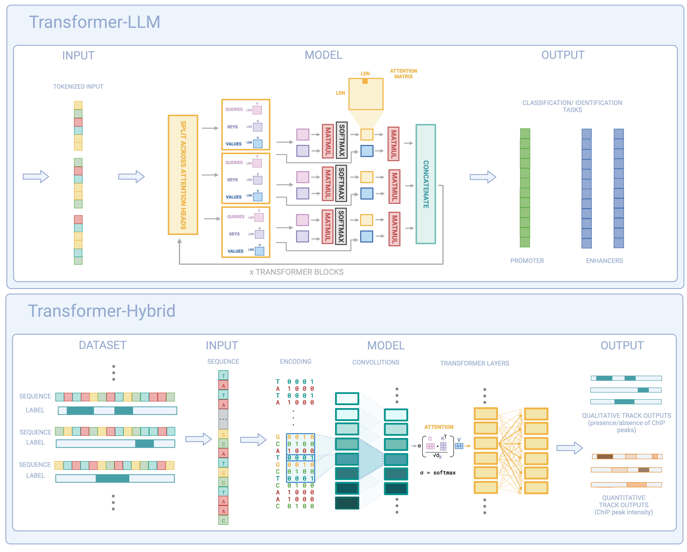
Figure 17.1 — Transformer-LLM and Transformer-Hybrid architectures for genomics (from "To Transformers and Beyond"). Top: Pure transformer with multi-head attention for classification tasks (promoter, enhancer identification). Bottom: Hybrid architecture combining CNN convolutions with transformer attention — the approach used by Enformer for predicting quantitative tracks from one-hot encoded DNA.
Transformers process all positions in parallel — they have no inherent sense of sequence order. Positional encoding adds order information by injecting position-dependent values into the input embeddings:
The sine/cosine functions at different frequencies create a unique "fingerprint" for each position. The model can learn relative positions from these patterns.
A transformer block combines:
Stacking N blocks gives a deep model that alternates between attending to relationships (attention) and transforming representations (feed-forward). BERT-base uses N=12 blocks; BERT-large uses N=24; GPT-4 scale models use >100.
The Phase 1 pipeline starts with Claude interpreting natural language descriptions of desired biological functions. Claude is a transformer — the exact architecture described in this chapter. When a user types "design a protein that cross-links fungal cell walls under mechanical stress," the self-attention mechanism is:
Understanding self-attention explains why Claude can reason about biology: it captures relationships between concepts at arbitrary distance in the input. The same mechanism, applied to DNA sequences (Chapter 18) and protein sequences (Chapter 19), captures relationships between nucleotides and amino acids at arbitrary distance in the genome.
"DNA is a language. Genomes are texts. The genome is a book written in a four-letter alphabet that we are only beginning to read." — adapted from the genomic LLM literature
The insight driving genomic language models is that DNA sequences are structured like natural language:
If NLP models can learn grammar and meaning from raw text, perhaps genomic models can learn regulatory grammar and biological function from raw DNA sequence.
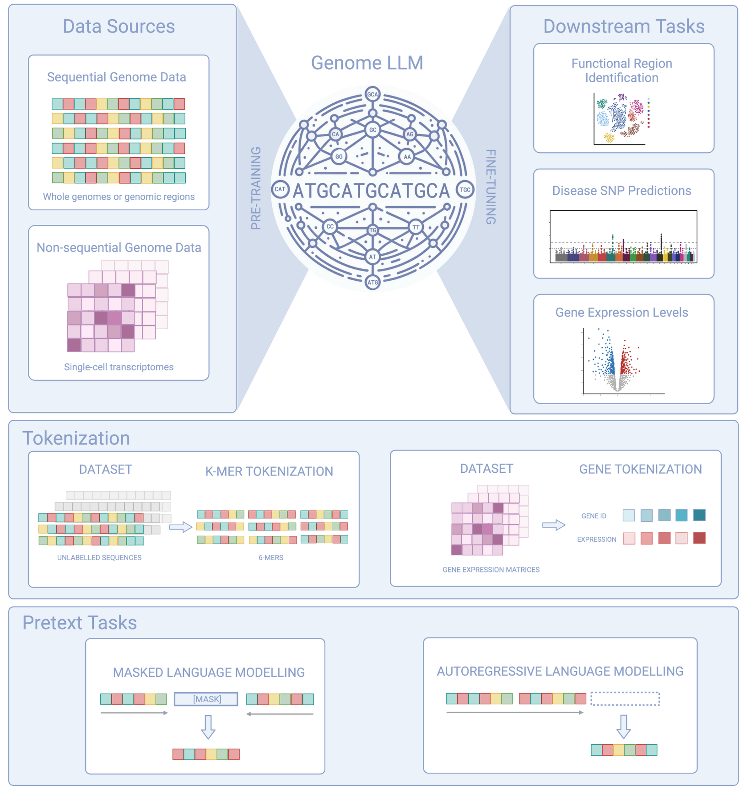
Figure 18.1 — Overview of genomic language models (from "To Transformers and Beyond"). Data sources (whole genomes, single-cell transcriptomes) feed into the model via tokenization strategies (k-mer, gene-level). Pretext tasks include masked language modeling and autoregressive prediction. Downstream tasks include functional region identification, disease SNP prediction, and gene expression modeling.
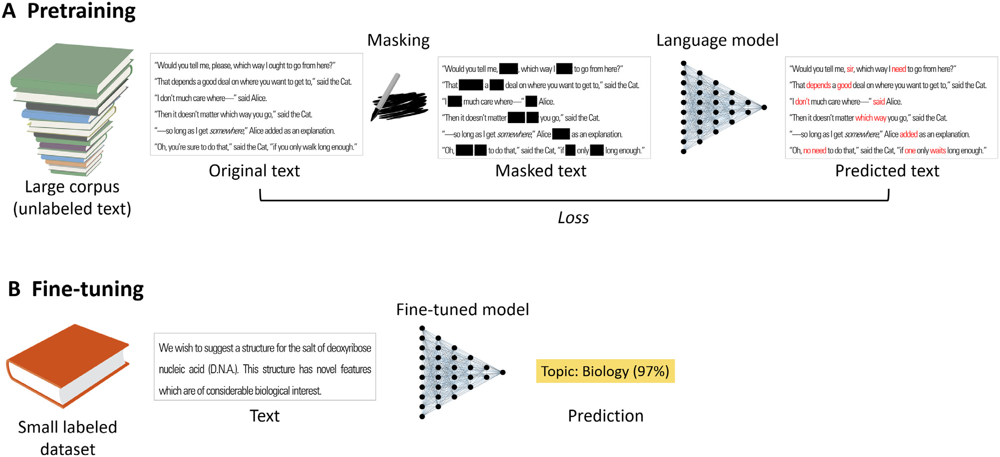
Figure 18.2 — Pretraining and fine-tuning pipeline (from Ofer et al.). A: Pretraining masks random tokens in a large unlabeled corpus and trains the model to predict them from context. B: Fine-tuning adds a task-specific head on top of the pretrained representations and trains on a small labeled dataset.
The BERT pretraining paradigm (Devlin et al., 2019) has been directly adapted for DNA:
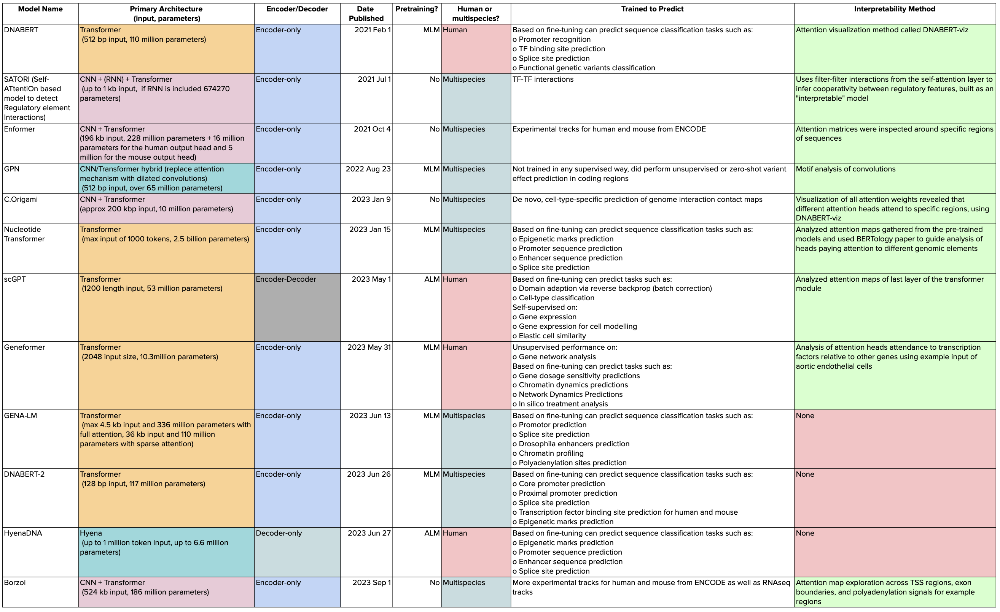
Figure 18.3 — Comparison of genomic language models (from "To Transformers and Beyond"). Models compared by architecture, parameters, input length, pretraining strategy, training data, and interpretability. DNABERT through Borzoi, spanning 2021-2023.
First BERT-style model for DNA. Uses 6-mer tokenization on the human genome. 110M parameters. Fine-tuned for promoter prediction, splice site detection, and TF binding prediction. Attention maps can be visualized to identify which sequence regions contribute to predictions.
Trained on 3,200+ genomes (not just human) with up to 2.5B parameters. Uses 6-mer tokenization and input up to 1000 tokens. Captures cross-species sequence patterns. Outperforms DNABERT on most benchmarks. Can predict epigenetic marks, enhancer sequences, and splice sites.
Uses the Hyena operator (a sub-quadratic alternative to attention) to handle ultra-long sequences — up to 1 million base pairs. Single-nucleotide resolution. This matters because regulatory elements can be >100kb from the genes they control. Standard transformers (with O(n²) attention) can't handle this length.
A different approach: instead of processing DNA sequence, Geneformer processes gene expression vectors. Each cell's transcriptome is tokenized as a ranked list of genes. Pretrained on ~30M single-cell transcriptomes. Predicts gene networks, disease gene candidates, and cell type transitions.
How to split a DNA sequence into tokens is a critical design choice:
A pretrained genomic LM can predict variant effects without any fine-tuning:
If the model assigns much higher probability to the reference nucleotide than the alternate at a given position, the variant likely disrupts the learned sequence grammar. This is "zero-shot" because it uses only the pretrained model — no labeled variant effect data needed.
Phase 2 uses genomic LMs as a "spellcheck" for designed regulatory sequences:
This is the genomic analog of a grammar checker: the LM has learned what "correct" DNA looks like from billions of bases of evolution. Designed sequences that deviate from this learned grammar are unlikely to function correctly.
For organisms not well-represented in training data (Ganoderma, coral), the Nucleotide Transformer's multi-species training provides some cross-species transfer. Eventually, the system could fine-tune a genomic LM on target organism sequences for higher accuracy.
"Proteins are sentences written in a 20-letter alphabet. Like language, their meaning depends on context." — Ofer et al., 2021
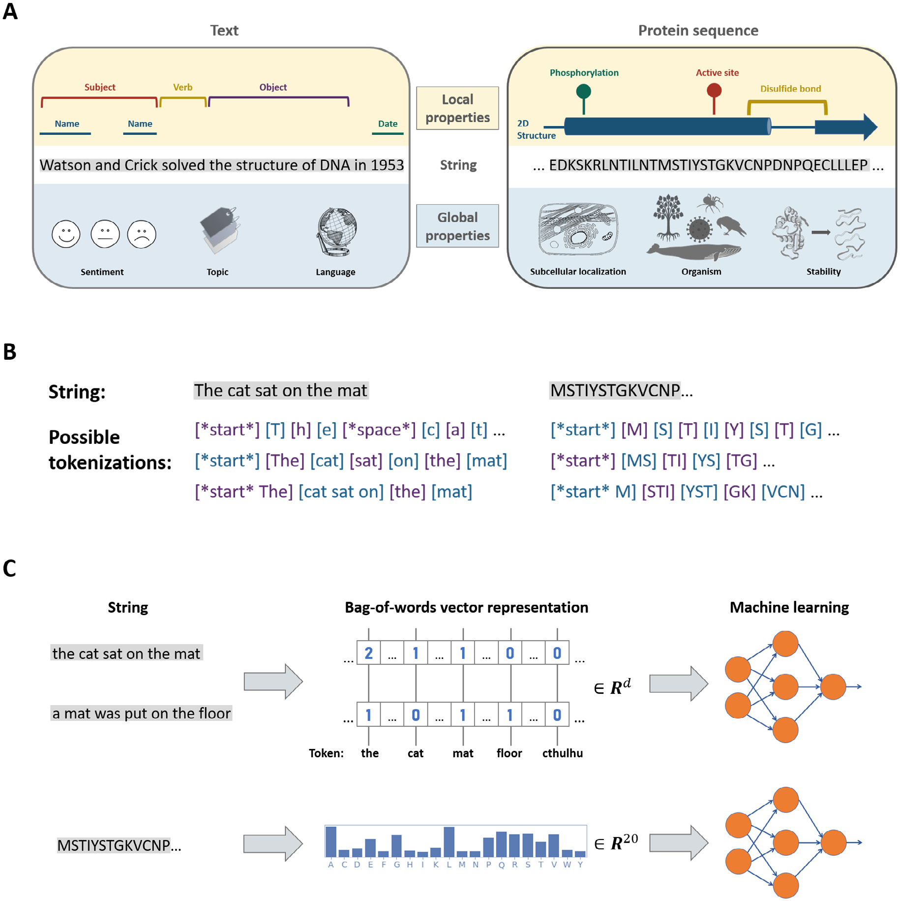
Figure 19.1 — The parallel between natural language processing and protein sequence analysis (Ofer et al.). A: Local properties (TF binding sites ↔ subject/verb/object), global properties (subcellular localization ↔ sentiment), and string structure (amino acid sequence ↔ text). B: Tokenization strategies for text and protein sequences. C: Bag-of-words representation for both domains.
Ofer et al. (2021) systematically map NLP concepts to protein biology:
Just as word2vec learns word embeddings from text, protein embedding methods learn amino acid/protein representations:
ESM (Rives et al., 2021; Lin et al., 2022) is the most important protein language model for the Living Works system:
From sequence alone (no structure labels, no function labels), ESM's internal representations encode:
ESM-3 is the protein generation engine at the heart of Phase 1. The pipeline:
The bridge/esm_bridge.py module (to be built in Phase 1) handles steps 2-5. It maps GO terms to ESM-3 function annotation tokens, calls the model, scores candidates, and returns codon-optimized DNA sequences.
Understanding how ESM works — masked language modeling, attention heads as contact maps, embeddings as function signatures — is essential for debugging the pipeline when candidates fail. If a candidate has high ESM likelihood but low pLDDT, the problem is likely in the structure module, not the sequence model.
"AlphaFold represents a stunning advance... this computational work represents a remarkable advance in the 50-year-old problem of protein structure prediction." — CASP14 assessment
A protein's function is determined by its 3D structure, which is determined by its amino acid sequence. Predicting structure from sequence — the "protein folding problem" — was one of biology's grand challenges for 50 years. AlphaFold2 (Jumper et al., 2021) effectively solved it for single-chain proteins.
AlphaFold2 has four main components:
The core innovation. Jointly updates MSA representations and pair representations through alternating:
Iteratively refines 3D coordinates from the Evoformer representations:
Frame-Aligned Point Error (FAPE): measures the discrepancy between predicted and true atom positions in the local reference frame of each residue. This makes the loss invariant to global rotation and translation.
AlphaFold3 (Abramson et al., 2024) extends to complexes:
AlphaFold is the quality control gate in Phase 1:
AlphaFold3 becomes critical in Phase 3 when the system designs protein-protein interactions — e.g., how a designed cross-linking enzyme interacts with the fungal cell wall substrate. The compatibility/pathway.py module's protein interface analysis could be replaced by AlphaFold3 complex prediction.
"The genome is not just a parts list — it is a program. Regulatory motifs are the grammar of that program." — Kellis Ch17
Regulatory motifs are short DNA sequence patterns (6-20bp) that are recognized by transcription factors (TFs). When a TF binds its motif, it activates or represses transcription of nearby genes. The combinatorial logic of which motifs appear, in what order, at what spacing, and with what orientation constitutes the regulatory code.
Motifs are represented as Position Weight Matrices (PWMs): at each position, the probability of each nucleotide. High-information positions are highly conserved (one nucleotide dominates); low-information positions are variable.
Kellis (Ch17) describes two algorithms for finding motifs in unaligned sequences:
This is the same EM framework as Baum-Welch (Chapter 5), applied to a simpler model. The "hidden variable" is the motif start position in each sequence.
Gibbs sampling is stochastic — it explores the solution space by random sampling rather than deterministic optimization. This helps escape local optima that EM gets stuck in.
Gene expression is controlled by combinations of motifs — an "enhanceosome" where multiple TFs cooperatively bind to activate transcription. Key principles:
Phase 2 doesn't just predict expression — it designs regulatory sequences. This requires writing motif combinations:
The compatibility/regulatory.py module already detects cross-kingdom conflicts (fungal vs bacterial promoter elements). Phase 2 extends this from detection to design — generating new regulatory sequences that follow the target organism's motif grammar.
The genome is the same in every cell of an organism — but different genes are active in different cells. The epigenome controls this differential activity through chemical modifications that don't change the DNA sequence:
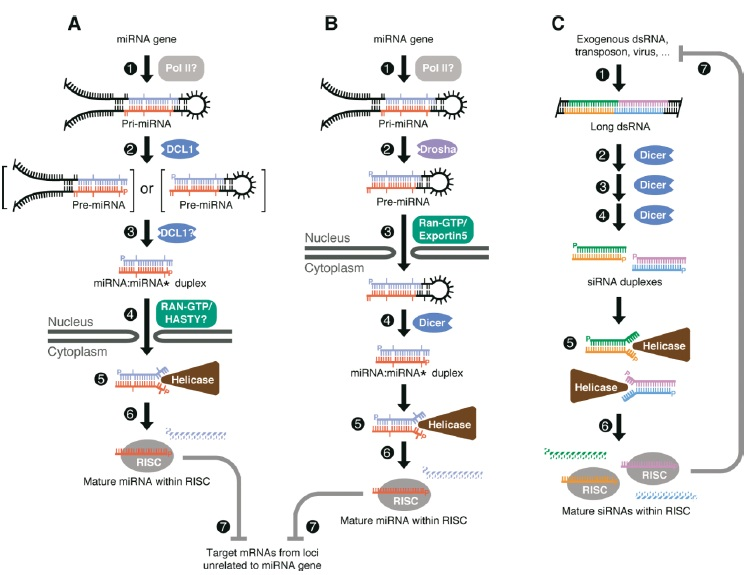
Figure 22.1 — RNA interference pathways (Kellis). Small RNAs (miRNA, siRNA) are processed by Dicer/Drosha, loaded into RISC, and guide translational repression or mRNA degradation. This post-transcriptional regulation adds another layer of gene control beyond chromatin state — relevant for designing expression circuits that include safety switches.
The ENCODE (Encyclopedia of DNA Elements) and Roadmap Epigenomics projects mapped histone modifications, TF binding, and chromatin accessibility across hundreds of human cell types and tissues. This data is the training set for epigenomic prediction models (DeepSEA, Enformer, ChromHMM).
ChromHMM (Chapter 5) learns chromatin states from histone modification data. Typical states discovered:
The most common failure mode in synthetic biology is transgene silencing — the inserted gene is recognized as foreign and shut down by the host's epigenetic machinery. Understanding chromatin states helps predict and prevent this:
Kellis (Ch20-21) covers network analysis in genomics. Biological systems operate through interconnected networks:
Which nodes are most important in a network?
Biological networks are modular — they contain densely connected subgraphs (modules) that correspond to functional units. Kellis covers spectral methods for community detection:
Phase 3 of the roadmap is GRN design — creating the developmental programs that grow structures. This requires network-level thinking:
"Every model in this course is a tool for reading life's source code. The Living Works system uses them to write the next chapter."
Every algorithm in this book maps to a specific layer of the adaptive_Automation system:
| Algorithm | System Layer | What It Does |
|---|---|---|
| Sequence Alignment | Retrieval | Find homologous genes across organisms |
| HMMs / Viterbi | Retrieval / Annotation | Identify gene structures in raw sequence |
| Markov Chains | Compatibility / Codon | Score and optimize codon dialect fitness |
| Baum-Welch / EM | Retrieval | Learn organism-specific model parameters |
| Logistic Regression | Compatibility / Pathway | Score variant effects and pathway impacts |
| Multiple Testing | Assembly | Control false positive rate in compatibility flags |
| Decision Trees | Retrieval / Species Search | Map functions to organisms and genes |
| Random Forests | Assembly | Designability scoring from multiple features |
| SVMs | Phase 1: Validation | Classify protein candidates as functional/not |
| CNNs | Phase 2: Regulatory | Learn motifs and predict expression from sequence |
| Enformer | Phase 2: Regulatory | Predict quantitative expression from 200kb context |
| Transformers / BERT | Phase 1: Claude Interface | English → biological specification |
| Genomic LMs | Phase 2: DNA Spellcheck | Verify designed sequences follow genomic grammar |
| ESM-3 | Phase 1: Protein Generation | Generate functional proteins from specification |
| AlphaFold | Phase 1: Structure Validation | Verify designed proteins fold correctly |
| ChromHMM | Phase 2: Chromatin Annotation | Find regulatory elements in target genomes |
| Network Analysis | Phase 3: GRN Design | Design developmental regulatory circuits |
| Bayesian Learning | All Layers | Uncertainty quantification throughout the pipeline |
Here is the complete Phase 1 data flow, with every algorithm labeled:
Every numbered step uses an algorithm from this book. The pipeline is not hypothetical — the retrieval layer, compatibility engine, and assembly engine are built. Phase 1 adds the Claude interface, ESM-3 bridge, and structure validation.
"The creation of the Living Age requires media to explain why and technology to show how."
Algorithms: Transformers (Claude), Protein LMs (ESM-3), Structure Prediction (AlphaFold), SVMs, Markov Chains (codon optimization)
Deliverable: Type English → get synthesis-ready DNA encoding a functional protein, with explanation
Demo: "Design a protein that cross-links fungal cell walls under mechanical stress" → codon-optimized DNA + pLDDT score + Claude explanation
Algorithms: CNNs (DeepSEA), Enformer, Genomic LMs (DNABERT/Nucleotide Transformer), ChromHMM, Regulatory Motif Discovery (EM/Gibbs)
Deliverable: Design not just the protein but the regulatory program — when, where, and how much to express it
New capability: Predict expression levels from designed sequence; optimize regulatory elements; DNA spellcheck
Algorithms: Network Analysis, GRN motifs (toggle switches, oscillators, feed-forward loops), scGPT/Geneformer (cell state modeling)
Deliverable: Design multi-gene circuits that produce developmental behaviors (branching, biomineralization, regeneration)
Data sources: Sea urchin GRN (Davidson lab), Arabidopsis meristem, mycelium growth programs, coral biomineralization
Algorithms: Physics-based simulation, FEM-lite structural analysis, growth rule optimization
Deliverable: 3D simulation of growing structures from gene regulatory programs. Export OBJ/STL for visualization.
Key question: Can GRN programs produce load-bearing structures without physical scaffolds?
Deliverable: Web-based design environment. Type English → get a complete living structure design: DNA sequences + growth protocol + structural analysis + 3D visualization.
Revenue model: Academic (free), Community ($50/mo), Commercial ($500/mo)
Prototype 1 (6mo): Living Shelf — single Ganoderma wall section with enhanced cross-linking. Test: structural strength + self-repair.
Prototype 2 (12mo): Living Panel — 1×1m gradient-guided growth with damage response. Test: regeneration after controlled damage.
Prototype 3 (24mo): Living Room — 3×3m enclosure with mycelium walls, cellulose windows, stress sensing.
Full living houses. Communities that grow. Architecture that restores ecosystems instead of depleting them.
The algorithms in this book are the tools. The organisms are the materials. The Living Works system is the translator between human intent and biological execution. The goal is not to replace nature's intelligence but to become fluent enough in its language to ask it — politely, precisely, and with understanding — to grow something beautiful.